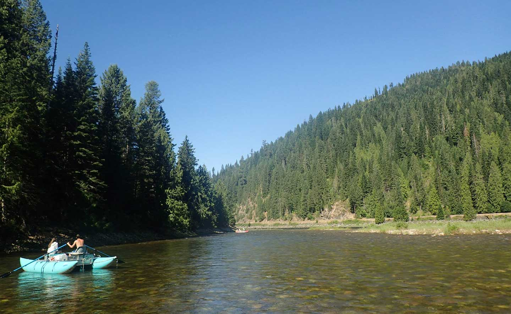

Taking the crown for the largest river in Idaho snake river spans about 1078 miles. It crosses into 6 different states.
Native Amercian tribes setteled along the river for nearly 11,000 years the most prevelent tribe being the Shoshone.
Lewis and clarke explored most of the area for travelers olong the oregon trail years later.
Salmon River or "The River of No Return" is 425 miles long and flows through most of central Idaho. The longest migration
of Pacific Stockeye Salmon occurs in this river. The lower parts of the river are also the divide for the time zone boundry.
This river provides spawning grounds for many fish not just salmon including varieties of trout. The river got the "River of
No Return" name from being the door to the untamed wilderness back in the day and even to this day the salmon river forms the
boundries between many towns and parks.
Only spanning 74 miles this river got its name from Native Americans for its precense for being a clean water source.
This river feeds one reservoir and the water for many communities in Idaho. This river is popular for being much wider
in some places than the other rivers in the region.
